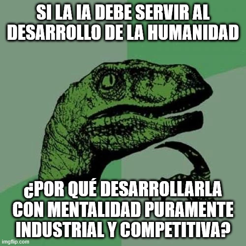

estrategIA #77 ·
La pregunta del dinosaurio humanista
El contexto
Civilización artificial, de José María Lassalle, pregunta qué lugar deben ocupar las personas en el desarrollo de la IA. El dinosaurio recoge una de sus tensiones: si la tecnología debe mejorar la vida humana, ¿por qué medir su éxito solo como una competición entre empresas?
Publicado en: estrategIA #77 Reseña de “Civilización artificial”: cómo construir desde el humanismo tecnológico el puente de IA que nos lleve del Homo digitalis al Homo deus
Leer el texto de la imagen
SI LA IA DEBE SERVIR AL DESARROLLO DE LA HUMANIDAD ¿POR QUÉ DESARROLLARLA CON MENTALIDAD PURAMENTE INDUSTRIAL Y COMPETITIVA?
Marca de la herramienta visible en el original: imgflip.com.